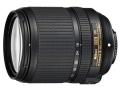

器材库 > APS画幅镜头 > AF-S DX 18-140/3.5-5.6 G ED VR

详细规格
镜头类型
标准变焦镜头
发布日期
2013-08-06
厂家推荐价格
73,500.00 （日元）
焦距
18mm-140mm
等效35mm画幅焦距
27mm-210mm
最大光圈
f/3.5-f/5.6
最小光圈
f/22-f/38
视角（对角）
76 - 11.5
镜头结构
17片/12组
非球面镜片
1片
低/超低色散镜片
1片
光圈叶片
7片
最近对焦距离
45cm
最大放大倍率
0.23倍
驱动马达
SWM（宁静波动马达）
滤镜口径
67mm
镜头卡口
Nikon AF
防抖
是
颜色
黑色
尺寸
78x97mm
重量
490g
promise3232014-08-20 20:594.58 分
操作性 4.50耐用性 4.50性价比 5.00解像力 5.00色彩还原 4.50机械结构 4.00
d62013-12-21 16:374.67 分
操作性 5.00耐用性 4.50性价比 5.00解像力 4.50色彩还原 4.50机械结构 4.50
武汉黑豹2013-08-24 12:224 分
操作性 4.00耐用性 4.00性价比 5.00解像力 4.00色彩还原 3.50机械结构 3.50